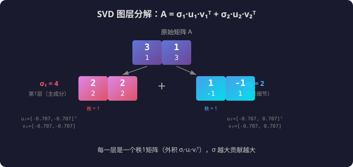
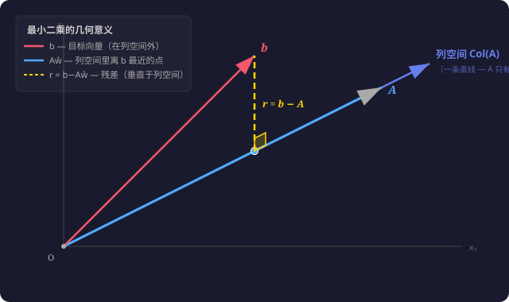

🌱 阶段 0 · 第 8 课
上节课得到的 SVD 公式：
$$A = U \Sigma V^T$$如果我们把 $U$ 的列记作 $\mathbf{u}_1,\mathbf{u}_2,\dots$，$V^T$ 的行记作 $\mathbf{v}_1^T,\mathbf{v}_2^T,\dots$，$\Sigma$ 对角线上的奇异值记作 $\sigma_1,\sigma_2,\dots$，那么 SVD 可以逐项展开写：
$$A = \sigma_1 \mathbf{u}_1 \mathbf{v}_1^T + \sigma_2 \mathbf{u}_2 \mathbf{v}_2^T + \cdots$$下面从 $A=U\Sigma V^T$ 出发，用公式一步步推出来。动手之前先搞清楚两个新概念。
每一项 $\sigma_i\mathbf{u}_i\mathbf{v}_i^T$ 是一张"图层"——$\sigma_i$ 越大，这层贡献越大。这就是后面「低秩近似」的基础：扔掉小 $\sigma_i$ 对应的图层，近似原矩阵。

# 00-07 第一步：把 SVD 展开，看每一项（每一层）长什么样
# 导入numpy，别名np，提供线性代数运算
import numpy as np
# np.array(嵌套列表) → 创建2×2二维数组
A = np.array([[3, 1],
# 外层列表每元素是一行：A = [[3,1],[1,3]]
[1, 3]])
# SVD分解：A = U Σ V^T，一次性拆成三部分
# U=左奇异向量(2×2), s=奇异值1D数组[σ₁,σ₂], VT=右奇异向量转置(2×2)
U, s, VT = np.linalg.svd(A)
# 打印原始矩阵，方便和后面的图层对比
print("原始矩阵 A:")
# 打印原始矩阵，方便对照
print(A)
# 逐层拆开——SVD可以写成：A = σ₁·u₁·v₁^T + σ₂·u₂·v₂^T + ...
# range(len(s))：遍历每个奇异值, i=0,1
for i in range(len(s)):
# 第 i 层: σᵢ · uᵢ · vᵢ^T
# np.outer(a, b)：外积，a是列向量(m×1)，b是行向量(1×n) → m×n矩阵
# U[:,i]：U的第i列（左奇异向量, 2维）
# VT[i,:]：VT的第i行（右奇异向量, 2维）
# s[i] * outer：奇异值σᵢ缩放这一层的贡献
# σᵢ × (uᵢ 和 vᵢ 的外积) = 第i层矩阵
layer = s[i] * np.outer(U[:, i], VT[i, :])
# f-string, :.1f=保留1位小数显示奇异值
print(f"\n第 {i+1} 层 (σ={s[i]:.1f}):")
# 打印这一层矩阵——σ越大贡献越大
print(layer)
# 验证：两层加起来应等于原矩阵 A
# s[0]*outer(U[:,0], VT[0,:])：第一层（σ₁,u₁,v₁）
# s[1]*outer(U[:,1], VT[1,:])：第二层（σ₂,u₂,v₂）
# \ 是Python行连接符，用于把长语句分成两行写
reconstructed = s[0]*np.outer(U[:,0], VT[0,:]) + \
s[1]*np.outer(U[:,1], VT[1,:])
# 验证重建结果，应和原始A一样
print(f"\n两层之和:\n{reconstructed}")
# allclose：容忍浮点误差的近似相等 → True
print(f"等于 A？ {np.allclose(A, reconstructed)}")
$\sigma_1 = 4$，$\sigma_2 = 2$。第一层贡献大，第二层贡献小。如果只用第一层（扔掉第二层），结果差多少？
# 00-07 第二步：只用最大的奇异值重建——看看误差多大
# 导入numpy，别名np
import numpy as np
# 同一个矩阵 A = [[3,1],[1,3]]
A = np.array([[3, 1],
# 2×2对称矩阵，奇异值σ₁=4, σ₂=2
[1, 3]])
# SVD分解：U(2×2), s=[4,2], VT(2×2)
U, s, VT = np.linalg.svd(A)
# 只用 k=1 个最大奇异值重建——扔掉σ₂这一层
# k=1：只保留第一个（最大的）奇异值
k = 1
# 生成器表达式 sum(... for i in range(k))：对前k个索引求和
# 每个i：s[i] * outer(U[:,i], VT[i,:]) = σᵢ · uᵢ · vᵢ^T
# 只用前k=1个奇异值：∑ σᵢ uᵢ vᵢ^T (i=0)
A_1 = sum(s[i] * np.outer(U[:, i], VT[i, :])
# range(k)=range(1)=[0]：只循环一次
for i in range(k))
# 计算重建误差——用Frobenius范数衡量矩阵间"距离"
# Frobenius范数 = 矩阵版L2：把所有元素当向量，平方求和再开方（00-03讲过）
# norm(..., 'fro') = √(Σ|Aᵢⱼ−A₁ᵢⱼ|²)，即逐元素算L2距离
error = np.linalg.norm(A - A_1, 'fro')
# 即把矩阵展平成一维，算欧几里得距离
# 打印标题
print(f"只用 {k} 个奇异值重建:")
# 打印近似矩阵A₁——和原A对比
print(A_1)
# 打印原始矩阵
print(f"\n原始 A:")
# 打印原始矩阵，方便对照
print(A)
# :.3f = 保留3位小数显示误差
print(f"\n误差 = {error:.3f}")
# 误差÷原始范数×100%=相对误差百分比
print(f"相对误差 = {error / np.linalg.norm(A, 'fro') * 100:.1f}%")
只用 1 个奇异值（丢掉 2/3 的信息），误差约 54%。但这个思路在更大的矩阵上威力巨大。如果一个矩阵有 100 个奇异值、只有前 5 个比较大，丢掉后 95 个可能只损失 1%。
# 00-08 第三步：5×3 满秩矩阵，用前 k 个奇异值重建
# 导入numpy，别名np
import numpy as np
# 固定随机种子=0，保证每次运行生成的"随机"数相同（可复现）
np.random.seed(0)
# 生成一个 5×3 的随机矩阵——自然满秩（秩=3，三个奇异值都非零）
# randn(5,3)：从标准正态分布N(0,1)中抽取 → 5行3列随机矩阵
A = np.random.randn(5, 3)
# SVD分解：U(5×5), s(3个奇异值), VT(3×3)
U, s, VT = np.linalg.svd(A)
# A.shape → (5, 3)，即5行3列
print(f"A 形状: {A.shape}")
# 三个奇异值都明显非零 → 矩阵满秩（秩=3），和2×2例子一样所有奇异值都有贡献
print(f"奇异值: σ₁={s[0]:.3f}, σ₂={s[1]:.3f}, σ₃={s[2]:.3f}")
# 空行，让输出更好看
print()
# 打印原始矩阵，方便和重建版本对比
print("原始 A:")
# round(A, 3)：四舍五入到3位小数，让输出整洁
print(np.round(A, 3))
# 分别试验：只用1个奇异值 vs 用前2个奇异值
for k in [1, 2]:
# 用前k个奇异值重建：∑_{i=0}^{k-1} σᵢ uᵢ vᵢ^T
# 生成器表达式：for i in range(k) 依次取i=0,...,k-1
A_k = sum(s[i] * np.outer(U[:, i], VT[i, :])
# sum()对生成器产生的k个矩阵逐元素求和
for i in range(k))
# Frobenius范数 = 矩阵版L2（见00-03）：√(Σ|Aᵢⱼ−A_kᵢⱼ|²)
error = np.linalg.norm(A - A_k, 'fro')
# 相对误差 = 绝对误差÷原矩阵大小×100%
rel_err = error / np.linalg.norm(A, 'fro') * 100
# 显示k和对应的误差
print(f"\nk={k}: 误差={error:.3f}, 相对={rel_err:.1f}%")
# 打印近似矩阵（四舍五入便于阅读）
print(np.round(A_k, 3))
三个奇异值分别是 3.538、2.149、0.769——都非零，矩阵是满秩的（秩=3）。只用 1 个奇异值误差 54%，加上第二个降到 18%。如果加第三个（k=3），误差归零——因为 3 个非零奇异值完全重建了矩阵的 3 个独立方向。
$A$ 是 $m \times n$ 长方形矩阵时，不能求 $A^{-1}$（只有方阵才有逆）。但 SVD 可以构造一个"最接近逆的东西"——伪逆 $A^+$。
SVD 的展开式告诉我们 $A$ 在做什么：
$$A = U \Sigma V^T$$即：$V^T$ 把输入换到奇异向量基 → $\Sigma$ 沿各方向拉伸 → $U$ 换回原坐标系。
逆应该反过来做：把输出换到 $U$ 的基 → 沿各方向压缩（取倒数）→ 换回 $V$ 的基。
$$A^+ = V \Sigma^+ U^T$$其中 $\Sigma^+$ 是 $\Sigma$ 的伪逆——非零奇异值取倒数，然后转置。
用下面代码里的 $A = \begin{bmatrix}1&2\\3&4\\5&6\end{bmatrix}$（3×2），SVD 给出：
$$\Sigma = \begin{bmatrix} \sigma_1 & 0 \\ 0 & \sigma_2 \\ 0 & 0 \end{bmatrix}_{3\times 2}$$$\Sigma$ 是 3×2，和 $A$ 形状一样。它的伪逆 $\Sigma^+$ 是 2×3：
$$\Sigma^+ = \begin{bmatrix} 1/\sigma_1 & 0 & 0 \\ 0 & 1/\sigma_2 & 0 \end{bmatrix}_{2\times 3}$$两步操作：① 每个非零 $\sigma_i$ 取倒数 → $1/\sigma_i$ ② 转置（3×2 变成 2×3）。零行零列互换了位置，不影响非零部分。
代入 SVD 展开算 $A^+ A$ 和 $A A^+$：
$$ \begin{aligned} A^+ A &= V \Sigma^+ \underbrace{U^T U}_{=I} \Sigma V^T = V \Sigma^+ \Sigma V^T \\ &= V \begin{bmatrix} 1 & 0 \\ 0 & 1 \end{bmatrix} V^T = V V^T = I_{2\times 2} \end{aligned} $$$\Sigma^+ \Sigma$：2×3 乘 3×2 = 2×2，对角线上是 $1/\sigma_i \cdot \sigma_i = 1$，恰好得到单位矩阵！所以 $A^+ A = I$——左伪逆完美成立。
$$ \begin{aligned} A A^+ &= U \Sigma \underbrace{V^T V}_{=I} \Sigma^+ U^T = U \Sigma \Sigma^+ U^T \\ &= U \begin{bmatrix} 1 & 0 & 0 \\ 0 & 1 & 0 \\ 0 & 0 & 0 \end{bmatrix} U^T \neq I_{3\times 3} \end{aligned} $$$\Sigma \Sigma^+$：3×2 乘 2×3 = 3×3，对角线上是 $[1, 1, 0]$——前两个是 1，第三个是 0。所以 $A A^+ \neq I$——右伪逆不完美，但它是能让 $\|A A^+ - I\|$ 最小的那个矩阵。
下面用代码验证上面的推导：
# 00-07 第四步：伪逆 — 手搓 vs 内置 —— 长方矩阵的"逆"
# 导入numpy，别名np
import numpy as np
# 3×2 长方形矩阵——不是方阵，无法求普通逆
# np.array创建3行2列矩阵：[[1,2],[3,4],[5,6]]
A = np.array([[1, 2],
# 3个方程，2个未知数 → 超定方程组
[3, 4],
# 形状 (3, 2)
[5, 6]])
# 方法1: numpy 内置伪逆函数——一行搞定
# pinv()返回Moore-Penrose伪逆，形状 (2,3)
A_plus_np = np.linalg.pinv(A)
# 3×2矩阵的伪逆是2×3，和转置形状一样
# 方法2: 用 SVD 手搓伪逆——A⁺ = V Σ⁺ U^T
# SVD分解 A=UΣV^T：U(3×3), s=[σ₁,σ₂], VT(2×2)
U, s, VT = np.linalg.svd(A)
# 构造 Σ⁺（Sigma的伪逆）：先把非零奇异值取倒数，再转置
# np.diag([1/σ₁, 1/σ₂]) → 2×2对角矩阵 [[1/σ₁,0],[0,1/σ₂]]
sigma_inv = np.diag(1.0 / s)
# 先创建2×3的全零矩阵——Σ⁺的容器
sigma_plus = np.zeros((2, 3))
# 左上角2×2子矩阵填入 1/σᵢ 对角线值
sigma_plus[:2, :2] = sigma_inv
# [:2,:2] = 前2行×前2列切片
# 组装伪逆：A⁺ = V Σ⁺ U^T
# VT.T = V（转置回来）, U.T = U^T（U的转置）
# (2×2) @ (2×3) @ (3×3) → (2×3) = 和pinv一样的形状
A_plus_manual = VT.T @ sigma_plus @ U.T
# round到4位，和手搓对比
print("numpy pinv:\n", np.round(A_plus_np, 4))
# 手搓结果，两者应完全一致
print("\n手搓:\n", np.round(A_plus_manual, 4))
print(f"\n一致？ {np.allclose(A_plus_np, A_plus_manual)}") # allclose容忍浮点误差 → True
# 伪逆有什么用？——解超定方程组 Ax = b（最小二乘解）
# 目标向量b，形状(3,)——3个方程的目标值
b = np.array([1, 2, 3])
# x = A⁺b，(2×3)@(3,)→(2,)，最小二乘最优解
x = A_plus_np @ b
# 这个x让||Ax−b||（误差范数）达到最小
# 打印最小二乘解
print(f"\n解 Ax ≈ b: x = {np.round(x, 4)}")
# A@x：(3×2)@(2,)→(3,) 验证近似结果
print(f"验证 Ax = {np.round(A @ x, 4)}")
# 原始目标b
print(f"目标 b = {b}")
# 残差范数——越小说明解越好
print(f"||Ax-b|| = {np.linalg.norm(A @ x - b):.4f}")
伪逆的本质是：把非零奇异值取倒数——因为 SVD 告诉我们 $A$ 在这些方向上拉伸了 $\sigma$ 倍，要"撤销"这个拉伸，就除以 $\sigma$。
给你三个点：$(0, 0)$、$(1, 2)$、$(2, 1)$。你想找一条过原点的直线 $y = w x$，让它同时穿过这三个点。
对每个点写方程：
$w$ 不能同时等于 2 和 0.5。三个点不在同一条过原点的直线上——这个方程组无解。
精确解不存在，但我们可以找一个 $w$，让预测值和真实值之间的差距尽可能小。
对于任意 $w$，三个点的误差分别是：
$$\begin{aligned} \text{点1}(0,0)&:\; w \cdot 0 - 0 = 0 \\ \text{点2}(1,2)&:\; w \cdot 1 - 2 = w - 2 \\ \text{点3}(2,1)&:\; w \cdot 2 - 1 = 2w - 1 \end{aligned}$$误差不能直接加起来——正的负的会抵消。所以把每个误差平方再求和：
$$\text{总误差} = 0^2 + (w-2)^2 + (2w-1)^2$$展开：$= w^2 - 4w + 4 + 4w^2 - 4w + 1 = 5w^2 - 8w + 5$
这是一个开口向上的抛物线。最小值在哪？求导，令导数为 0：
$$\frac{d}{dw}(5w^2 - 8w + 5) = 10w - 8 = 0 \quad\Rightarrow\quad w = 0.8$$最佳直线是 $y = 0.8x$。它不是「正确」的（点不在上面），但它是「最好的」——所有可能直线里误差平方和最小的那一条。
这就是最小二乘法：「二」是平方，「乘」是误差。让误差的平方和最小。
上面的三个方程可以写成矩阵形式 $A\mathbf{x} = \mathbf{b}$：
$$\underbrace{\begin{bmatrix} 0 \\ 1 \\ 2 \end{bmatrix}}_{A_{3\times 1}} \underbrace{\vphantom{\begin{bmatrix}0\\1\\2\end{bmatrix}} w}_{\mathbf{x}_{1\times 1}} = \underbrace{\begin{bmatrix} 0 \\ 2 \\ 1 \end{bmatrix}}_{\mathbf{b}_{3\times 1}}$$$A$ 是 3×1 列向量，$w$ 是标量。$A w = \mathbf{b}$ 无精确解。最小二乘就是要找 $w$ 让 $\|A w - \mathbf{b}\|^2$ 最小。
上面用微积分求出来 $w = 0.8$。用伪逆行不行？下面不靠 SVD，直接从「最小化误差」这个目标把伪逆公式推出来。
① 目标函数：为什么写 $\|A w - \mathbf{b}\|^2$ 而不是 $\|A w - \mathbf{b}\|$？
向量 $\mathbf{v}$ 的模（长度）：$\|\mathbf{v}\| = \sqrt{v_1^2 + v_2^2 + \cdots}$——里面平方求和，外面开方。再加一个平方：$\|\mathbf{v}\|^2 = v_1^2 + v_2^2 + \cdots$——根号消掉了，回到纯粹的平方和。
$\|A w - \mathbf{b}\|$ 和 $\|A w - \mathbf{b}\|^2$ 在同一个 $w$ 处取最小值（开方是单调的），但平方和没有根号，求导干净。而且「最小二乘」的「二乘」就是误差的平方和——$\|\cdot\|^2$ 正是这件事的矩阵写法。
② 展开：把模平方写成可求导的形式
$\|A w - \mathbf{b}\|^2$ 是一个向量的模平方。向量模平方 = 向量点乘自己：$\|\mathbf{v}\|^2 = \mathbf{v} \cdot \mathbf{v}$。点乘写成矩阵形式就是 $\mathbf{v}^T \mathbf{v}$。所以：
$$\|A w - \mathbf{b}\|^2 = (A w - \mathbf{b})^T (A w - \mathbf{b})$$这是 $(a-b)^2$ 的向量版本。展开和普通二项式完全一样——注意 $w$ 是标量，可以从转置里提出来：
$$\begin{aligned} (A w - \mathbf{b})^T (A w - \mathbf{b}) &= \underbrace{(A w)^T (A w)}_{\text{第一项}} \;-\; \underbrace{(A w)^T \mathbf{b}}_{\text{交叉项①}} \;-\; \underbrace{\mathbf{b}^T (A w)}_{\text{交叉项②}} \;+\; \underbrace{\mathbf{b}^T \mathbf{b}}_{\text{常数项}} \\[4pt] &= (w A^T)(A w) \;-\; w A^T \mathbf{b} \;-\; w \mathbf{b}^T A \;+\; \mathbf{b}^T \mathbf{b} \qquad (\text{$w$ 是标量，提出去})\\[4pt] &= w^2 A^T A \;-\; 2 w A^T \mathbf{b} \;+\; \mathbf{b}^T \mathbf{b} \qquad (\text{两个交叉项相等：} \mathbf{b}^T A = A^T \mathbf{b} \text{，都是标量}) \end{aligned}$$③ 求导，令其为 0
这是一个关于标量 $w$ 的二次函数。$A^T A$、$A^T \mathbf{b}$、$\mathbf{b}^T \mathbf{b}$ 都是常数（具体数字，和 $w$ 无关）。对 $w$ 求导：
$$\frac{d}{dw}\bigl(w^2 A^T A - 2 w A^T \mathbf{b} + \mathbf{b}^T \mathbf{b}\bigr) = 2 A^T A \, w - 2 A^T \mathbf{b}$$令导数为 0（二次函数开口向上，极值点就是最小值点）：
$$2 A^T A \, w - 2 A^T \mathbf{b} = 0 \quad\Rightarrow\quad \boxed{A^T A \, w = A^T \mathbf{b}}$$这个方程叫法方程（normal equation）——最小二乘问题的核心。
④ 解出 $w$，认出伪逆
$A$ 是 $3 \times 1$ 列向量，所以 $A^T A$ 是 $1 \times 1$——一个标量。直接除：
$$w = \frac{A^T \mathbf{b}}{A^T A}$$把分数拆开看：$w = \left(\dfrac{A^T}{A^T A}\right) \mathbf{b}$。括号里的东西是 $1 \times 3$ 行向量除以 $1 \times 1$ 标量 → 还是 $1 \times 3$。它把 $\mathbf{b}$（$3 \times 1$）变成 $w$（$1 \times 1$）——恰好是 $A$（$3 \times 1$）的「逆」操作。
验一下：把这个东西乘到 $A$ 前面：
$$\frac{A^T}{A^T A} \cdot A = \frac{A^T A}{A^T A} = 1$$$1$ 就是 $1 \times 1$ 的「单位矩阵」。所以 $\dfrac{A^T}{A^T A}$ 满足「左乘 $A$ 得单位阵」——这正是伪逆 $A^+$ 的定义之一。因此：
$$\boxed{A^+ = \frac{A^T}{A^T A}}$$⑤ 一句话总结：伪逆不是凭空定义的——它就是「让 $\|A w - \mathbf{b}\|^2$ 最小的那个 $w$ 的求解公式」里 $\mathbf{b}$ 前面的系数。
下面代入具体数字，验证和求导结果一致：
第一步：写下 $A$ 和 $\mathbf{b}$。
$$A = \begin{bmatrix} 0 \\ 1 \\ 2 \end{bmatrix},\qquad \mathbf{b} = \begin{bmatrix} 0 \\ 2 \\ 1 \end{bmatrix}$$第二步：算 $A^T \mathbf{b}$（分子）。 $A^T$ 是 $1\times 3$ 行向量 $\begin{bmatrix}0 & 1 & 2\end{bmatrix}$。$A^T$ 乘 $\mathbf{b}$（$3\times 1$）→ $1\times 1$ 标量，就是内积：
$$A^T \mathbf{b} = \begin{bmatrix}0 & 1 & 2\end{bmatrix} \begin{bmatrix}0 \\ 2 \\ 1\end{bmatrix} = 0 \cdot 0 + 1 \cdot 2 + 2 \cdot 1 = 0 + 2 + 2 = 4$$几何含义：4 是 $\mathbf{b}$ 在 $A$ 方向上的「投影坐标」乘以 $A$ 的长度。
第三步：算 $A^T A$（分母）。 $A^T A$ 是 $A$ 和自己的内积——就是 $A$ 的长度平方：
$$A^T A = \begin{bmatrix}0 & 1 & 2\end{bmatrix} \begin{bmatrix}0 \\ 1 \\ 2\end{bmatrix} = 0^2 + 1^2 + 2^2 = 0 + 1 + 4 = 5$$第四步：$A^+ \mathbf{b}$ = 分子 ÷ 分母。
$$w = A^+ \mathbf{b} = \frac{A^T \mathbf{b}}{A^T A} = \frac{4}{5} = 0.8 \;\checkmark$$和求导的结果完全一样。伪积公式给的就是最小二乘解。这正好验证：$A^+ \mathbf{b}$ 就是让 $\|A w - \mathbf{b}\|^2$ 最小的那个 $w$。
上面算出了最优权重：$\hat{w} = 0.8$（加个帽子表示「估计值」）。把这个 $\hat{w}$ 代回 $A w$，就得到最优预测向量：
$$A\hat{w} = 0.8 \cdot \begin{bmatrix}0 \\ 1 \\ 2\end{bmatrix} = \begin{bmatrix}0 \\ 0.8 \\ 1.6\end{bmatrix}$$$\mathbf{b} = [0, 2, 1]^T$ 是真实目标。预测和真实之间的差距——残差——是：
$$\mathbf{r} = \mathbf{b} - A\hat{w} = \begin{bmatrix}0 \\ 2 \\ 1\end{bmatrix} - \begin{bmatrix}0 \\ 0.8 \\ 1.6\end{bmatrix} = \begin{bmatrix}0 \\ 1.2 \\ -0.6\end{bmatrix}$$关键验证——残差垂直于 $A$：
$$A^T \mathbf{r} = \begin{bmatrix}0 & 1 & 2\end{bmatrix} \begin{bmatrix}0 \\ 1.2 \\ -0.6\end{bmatrix} = 0 \cdot 0 + 1 \cdot 1.2 + 2 \cdot (-0.6) = 1.2 - 1.2 = 0 \;\checkmark$$$A^T \mathbf{r} = 0$ 就是内积 $A \cdot \mathbf{r} = 0$——$A$ 和 $\mathbf{r}$ 垂直。这不是巧合。法方程 $A^T A \hat{w} = A^T \mathbf{b}$ 移项就是 $A^T(\mathbf{b} - A\hat{w}) = 0$，即 $A^T \mathbf{r} = 0$。
总结构画面：

回到一般情况：$A$ 是 $m \times n$（$m > n$，行比列多），$A\mathbf{x} = \mathbf{b}$ 无精确解。目标是 $\min_{\mathbf{x}} \|A\mathbf{x} - \mathbf{b}\|^2$。
代入 SVD $A = U\Sigma V^T$：
$$ \begin{aligned} \|A\mathbf{x} - \mathbf{b}\|^2 &= \|U\Sigma V^T\mathbf{x} - \mathbf{b}\|^2 \\ &= \|\Sigma V^T\mathbf{x} - U^T\mathbf{b}\|^2 \quad (\text{$U$ 是正交矩阵，乘它不改变长度}) \end{aligned} $$令 $\mathbf{z} = V^T\mathbf{x}$，$\mathbf{c} = U^T\mathbf{b}$。问题变成：找 $\mathbf{z}$ 让 $\|\Sigma\mathbf{z} - \mathbf{c}\|^2$ 最小。
$\Sigma$ 是对角矩阵（$m\times n$）。$\Sigma\mathbf{z}$ 把 $z_1$ 拉伸 $\sigma_1$ 倍，$z_2$ 拉伸 $\sigma_2$ 倍，…，第 $n+1$ 到第 $m$ 个分量永远是 0（因为 $\Sigma$ 只有 $n$ 列）。所以要最小化：
$$(\sigma_1 z_1 - c_1)^2 + (\sigma_2 z_2 - c_2)^2 + \cdots + (\sigma_n z_n - c_n)^2 + \underbrace{(0 - c_{n+1})^2 + \cdots + (0 - c_m)^2}_{\text{管不了}}$$前 $n$ 项：令 $z_i = c_i / \sigma_i$ 可以把每一项都归零——因为 $z_i$ 是自由的，我们可以选择让 $\sigma_i z_i$ 恰好等于 $c_i$。
后面 $m-n$ 项：$\Sigma$ 在这些方向上输出永远是 0。$c_{n+1}, \dots, c_m$ 是 $\mathbf{b}$ 在 $A$ 的列空间之外的分量——无论怎么调 $\mathbf{x}$ 都影响不了它们。
这就解释了残差为什么不可避免：$\mathbf{b}$ 在列空间之外的部分，最小二乘也管不了。但管不了不等于不尽力——前 $n$ 项归零已经是在列空间内做到了最好。
结果：$z_i = c_i / \sigma_i$ → $\mathbf{z} = \Sigma^+ \mathbf{c}$ → 代回去：
$$\mathbf{x} = V\Sigma^+ U^T \mathbf{b} = A^+ \mathbf{b}$$关于 $U$、$V$ 的手算：这个推导用了 SVD，但没有手算 $U$ 和 $V$——所有数都是符号（$U$、$\Sigma$、$V^T$）在推导中被消掉，最后只留下 $A^+ \mathbf{b}$。实际中，$U$、$V$ 的具体数值由 `np.linalg.svd()` 完成——背后是解 $A^T A$ 的特征值问题，不值得手算。知道它们存在、知道它们的性质（正交、对角化 $A$），就足以驾驭 SVD 了。
一个 100×100 的矩阵有 80 个非零奇异值。只保留前 5 个重建，误差 0.3%。这说明什么？后 75 个奇异值大概多小？
——考察：奇异值衰减速度 = 矩阵"低秩程度"
$A$ 是 $2\times 2$ 可逆方阵。用 SVD 证明 $A^+ = A^{-1}$。（提示：$A = U\Sigma V^T$，所以 $A^{-1} = V\Sigma^{-1} U^T$）
——考察：伪逆是普通逆的推广
如果 $A$ 是 $5 \times 5$ 矩阵，`np.linalg.svd` 返回的奇异值中有一个是 0（或极接近 0）。$A$ 的秩是多少？`np.linalg.matrix_rank(A)` 会返回什么？验证代码。
——考察：秩 = 非零奇异值的个数